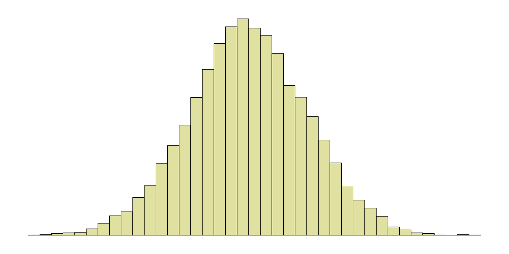
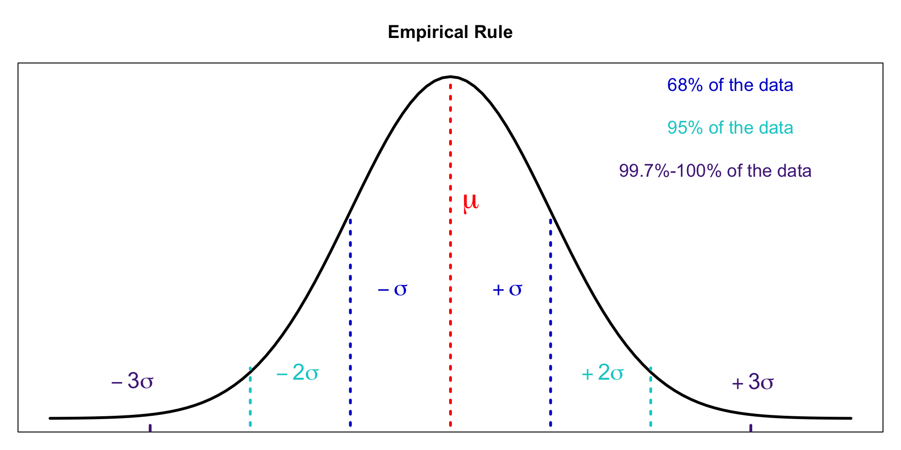
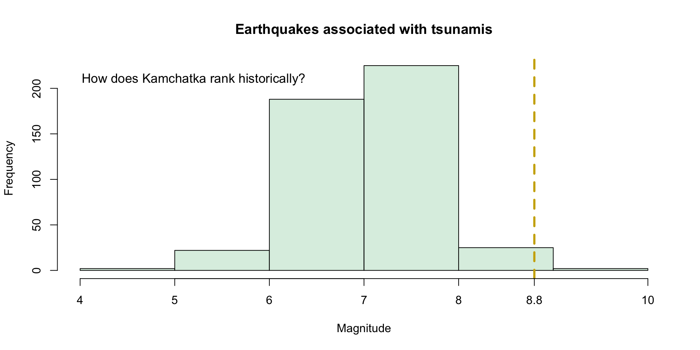

| Location | Frequency | Location | Frequency | Location | Frequency | Location | Frequency |
|---|---|---|---|---|---|---|---|
| 1-1Al | 45 | 2-4Mor | 251 | 3-5 Mor | 4 | 4-4Eis | 8 |
| 1-1AL | 29 | 2-5Mor | 254 | 3-5-1 Mor | 189 | 4-4Stearns | 249 |
| 1-3Eis | 141 | 2-6Eis | 150 | 3-5Mor | 254 | 4-5Eis | 7 |
| 1-3Mor | 113 | 2-6Mor | 257 | 3-6Eis | 208 | 4-5Stearns | 248 |
| 1-4Al | 46 | 3-1 Stream | 38 | 3-6Mor | 182 | 4-6 Eis1 | 34 |
| 1-4AL | 142 | 3-1Al | 94 | 3-7Eis | 183 | 4-6 Eis2 | 34 |
| 1-6Eis | 141 | 3-1AL | 17 | 3-7Mor | 167 | 4-6 Mor | 200 |
| 1-6Mor | 235 | 3-1Stream | 193 | 4-1 Stream | 240 | 4-6Eis1 | 225 |
| 2-1 Stream | 1 | 3-2Eis | 186 | 4-1Stream | 16 | 4-6Eis2 | 227 |
| 2-1Mor | 242 | 3-2Mor | 247 | 4-2Eis1 | 256 | 4-6Mor | 61 |
| 2-1Stream | 10 | 3-3Eis | 257 | 4-2Eis2 | 256 | 4-7 Mor | 134 |
| 2-3Eis | 252 | 3-3Mor | 258 | 4-2Mor | 246 | 4-7Mor | 51 |
| 2-3Mor | 137 | 3-4AL | 196 | 4-2Spring | 10 | N4d-Wier | 10 |
Summary Statistics II
STAT 240 - Fall 2025
Robert Sholl
Measures of Spread
Variance
\[ \begin{array}{|c|c|c|c|c|} \hline 1.92 & 1.4 & 1.45 & 1.25 & 1.23 \\ \hline \end{array} \]
Variance
\[ \begin{aligned} \bar x = & \ 1.45\\ s^2=& \ \frac{1}{5}\left((1.92-1.45)^2+(1.4-1.45)^2+(1.45-1.45)^2+\\ (1.25-1.45)^2+(1.23-1.45)^2\right)\\ s^2 = & \ \frac{1}{5}\left((0.47)^2+(-0.05)^2+(0)^2+(-0.2)^2+(0.22)^2 \right)\\ s^2= & \ \frac{1}{5} \left( 0.2209+0.0025 + 0 + 0.04 + 0.0484\right)\\ s^2 = & \ \frac{1}{5}(0.3318) = 0.06236 \end{aligned} \]
Variance
\[ \begin{aligned} \bar x = \ 1.45 \text{ mg/L}\\ \end{aligned} \]
\[ \begin{aligned} s^2= \ \frac{1}{5}\left((1.92 \text{ mg/L}-1.45 \text{ mg/L})^2+(1.4 \text{ mg/L}-1.45 \text{ mg/L})^2\\ +(1.45\text{ mg/L}-1.45\text{ mg/L})^2+(1.25\text{ mg/L}-1.45\text{ mg/L})^2\\ +(1.23\text{ mg/L}-1.45\text{ mg/L})^2\right)\\ \end{aligned} \]
\[ \begin{aligned} s^2 = \ \frac{1}{5}(0.3318 \text{ mg}^2/\text{L}^2) = 0.06236 \text{ mg}^2/\text{L}^2 \end{aligned} \]
Standard Deviation
\[\sigma = \sqrt{\sigma^2}\]
\[s = \sqrt{s^2}\]
\[s=\sqrt{0.06236 \text{ mg}^2/\text{L}^2} = 0.2497198 \text{ mg/L}\]
Fundamentally achieves the same thing as absolute difference
Analytically simpler
Empirical Rule
Empirical Rule
\[\approx 68\% = \begin{cases} \mu - \sigma \\ \mu + \sigma \end{cases}\]
\[\approx 95\% = \begin{cases} \mu - 2\sigma \\ \mu + 2\sigma \end{cases}\]
\[\approx 99.7-100\% = \begin{cases} \mu - 3\sigma \\ \mu + 3\sigma \end{cases}\]
Empirical Rule
Measures of Position
z-scores
z-scores
Population:
\[ z = \frac{x-\mu}{\sigma} \]
Sample:
\[ z = \frac{x-\bar x}{\sigma} \]
z-scores

Percentiles
Percentiles
Arrange the data in increasing order (low to high)
Define a number, \(p\), between \(1\) and \(99\)
Let \(n\) be the sample size. The \(p^{th}\) percentile is located at:
\[ L = \frac{p}{100} \times n \]
- Given \(n=464\), find the location of the \(99^{th}\) percentile
Percentiles
# count the number of earthquakes of equal or greater magnitude
count = length(
subset(
tsunami$magnitude,tsunami$magnitude>=8.8))
print(count)[1] 3Quartiles
- Special case of percentiles
\[ \begin{aligned} \text{Q}_1 = 25^{th} \text{ percentile} \\ \\ \text{Q}_2 = 50^{th} \text{ percentile} \\ \\ \text{Q}_3 = 75^{th} \text{ percentile} \\ \end{aligned} \]
Five Number Summary
\[ \begin{aligned} \text{Min} = 0^{th} \text{ percentile} \\ \\ \text{Q}_1 = 25^{th} \text{ percentile} \\ \\ \text{Q}_2 = 50^{th} \text{ percentile} \\ \\ \text{Q}_3 = 75^{th} \text{ percentile} \\ \\ \text{Max} = 100^{th} \text{ percentile} \\ \end{aligned} \]
Five Number Summary
\[ \begin{array}{|c|c|c|c|c|} \hline \text{Min} & \text{Q}_1 & \text{Q}_2 & \text{Q}_3 & \text{Max} \\ \hline \end{array} \]
Compute the five number summary of the data below:
\[ \begin{array}{|c|c|c|c|c|} \hline 7.6 & 7.3 & 5.4 & 7.4 & 6.5 \\ \hline 6.4 & 8.1 & 5.5 & 6.7 & 7.7 \\ \hline 7.2 & 8.3 & 7.4 & 7.8 & 7.5 \\ \hline \end{array} \]
Five Number Summary
# random sample of 15 earthquake magnitudes
magnitude_sample = c(7.6,7.3,5.4,7.4,6.5,
6.4,8.1,5.5,6.7,7.7,
7.2,8.3,7.4,7.8,7.5)
# base R function for five number summary
fivenum(magnitude_sample)[1] 5.40 6.60 7.40 7.65 8.30Five Number Summary
Given that \(n=464\), find the proportion of values less than each summary’s position:
| Min | Q1 | Q2 | Q3 | Max | |
|---|---|---|---|---|---|
| Summary | 4.4 | 6.7 | 7.1 | 7.6 | 9.1 |
| Position | 2.0 | 127.0 | 241.0 | 365.0 | 464.0 |
Five Number Summary
# five number summary of tsunami magnitudes
tsunami_fivenum = fivenum(tsunami$magnitude)
# empty vector to check the number of earthquakes less than each summary
check = c()
# loop over the five number summary
for(i in 1:5){
# fill the vector with the count of lesser earthquakes
check[i] = length(
subset(
tsunami$magnitude,
tsunami$magnitude<=tsunami_fivenum[i]))
}
# fill a data frame to act as a table
tsunami_table = data.frame(Summary = tsunami_fivenum, Position = check)Interquartile Range
- One of the ways we can detect outliers
\[ \text{IQR} = \text{Q}_3 - \text{Q}_1 \]
IQR Method
- Define outlier boundaries
\[ \text{Lower Boundary} = \text{Q}_1 - 1.5 \times \text{IQR} \]
\[ \text{Upper Boundary} = \text{Q}_3 + 1.5 \times \text{IQR} \]
- Check to see if any values are below the lower or above the upper
IQR Method
Define the lower and upper boundary for the earthquake data five number summary:
| Min | Q1 | Q2 | Q3 | Max |
|---|---|---|---|---|
| 4.4 | 6.7 | 7.1 | 7.6 | 9.1 |
Can we consider the minimum and maximum outliers?
Outliers
Extreme values
- Extreme has many definitions
Generally we avoid throwing them out
If they’re obvious measurement errors we can delete them
How can measurement errors still be useful?
Cherry picking is really common with outliers